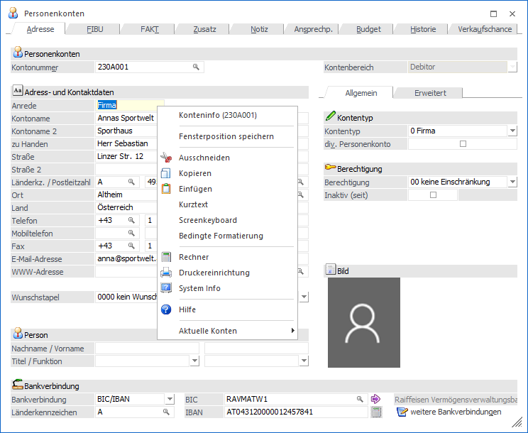
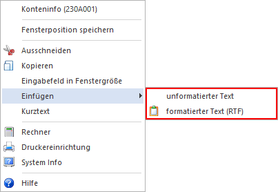
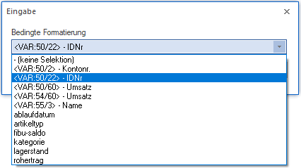
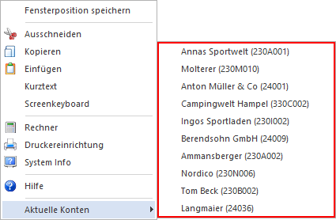

Wenn ein Fenster geöffnet ist (z.B. eine Eingabemaske) gibt es - abhängig vom aktiven Eingabefeld - weitere Möglichkeiten:

Ø Ausschneiden
Damit wird der Inhalt eines Eingabefeldes gelöscht und in die Zwischenablage kopiert. Von dort aus kann es z.B. in ein anderes Eingabefeld eingefügt werden.
Ø Kopieren
Damit wird der Inhalt eines Eingabefeldes in die Zwischenablage kopiert, von wo es z.B. in ein anderes Eingabefeld kopiert werden kann. Der Inhalt des Eingabefeldes wird nicht verändert.
Ø Einfügen
Damit wird der Inhalt der Zwischenablage in das aktuelle Eingabefeld kopiert. Wird der Einfügen-Befehl in einem RTF-Feld ausgeführt und befindet sich in der Zwischenablage ein RTF-Text, so kann mittels den Untermenüpunkten entweder der Text unformatiert oder als formatierter Text (RTF) eingefügt werden.

Ø Kurztext
Mit Hilfe dieser Funktion kann für markierte Textkürzel nach dem passenden ausgeschriebenen Text gesucht werden. Die Anlage von Kurztext und Bezeichnung erfolgt im Programm "Kurztexte" (WinLine START - Optionen - Kurztexte).
Variationen zu Kurztext
Die Option "Kurztext" steht nur zur Verfügung, wenn in das aktuelle Eingabefeld ein Text eingegeben werden kann. Wenn es sich bei dem aktuellen Eingabefeld um ein numerisches Feld (nur Zahlen) handelt, so wird die Option "Kurztext" z.B. durch die Option "Rechner-Wert einfügen" ersetzt. Ist das aktuelle Eingabefeld ein Datumsfeld, steht die Option "Datum einfügen" und "" zur Verfügung:
Ø Rechner-Wert einfügen
Mit dieser Option kann ein gespeicherter Wert, der über den Taschenrechner (Funktionstaste F2) errechnet wurde, in das Eingabefeld eingefügt werden.
Ø Datum einfügen
Mit dieser Option wird das aktuelle Systemdatum in das Eingabefeld eingefügt.
Ø Screenkeyboard
Durch Anwahl dieser Funktion wird eine Bildschirmtastatur eingeblendet.
Ø Bedingte Formatierung
Diese Option steht nur WinLine-Administratoren zur Verfügung und damit wird ein Fenster geöffnet, aus dem die gewünschte Bedingung (muss im WinLine ADMIN definiert worden sein) für dieses Eingabefeld ausgewählt werden kann.

Ø Audit Trail
Befindet sich im Fenster ein Eingabefeld dessen Datenänderungen protokolliert werden, steht die Funktion "Audit Trail" zur Verfügung. Damit können die bereits durchgeführten Datenänderungen in diesem Feld abgerufen werden (nähere Informationen entnehmen Sie bitte dem Kapitel Audit Trail).
Ø Aktuelles Objekt
Abhängig vom aktuellen Eingabefeld werden die letzten 11 WinLine-Objekt vorgeschlagen, mit welchen agiert wurde. Bei Auswahl eines der Objekte, wird jenes in das Ausgangsfeld übertragen. Bei den folgenden Feldern steht die Funktion zur Verfügung:
ü Kontonummer
ü Artikelnummer
ü Belegnummer
ü Produktionsauftragsnummer
ü Inventarnummer
ü CRM-Fall
